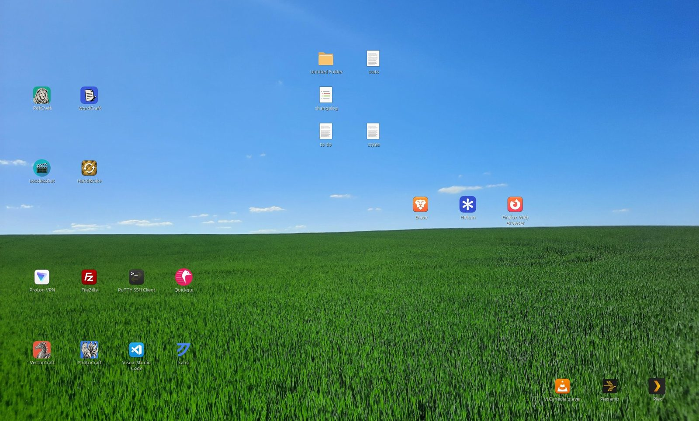
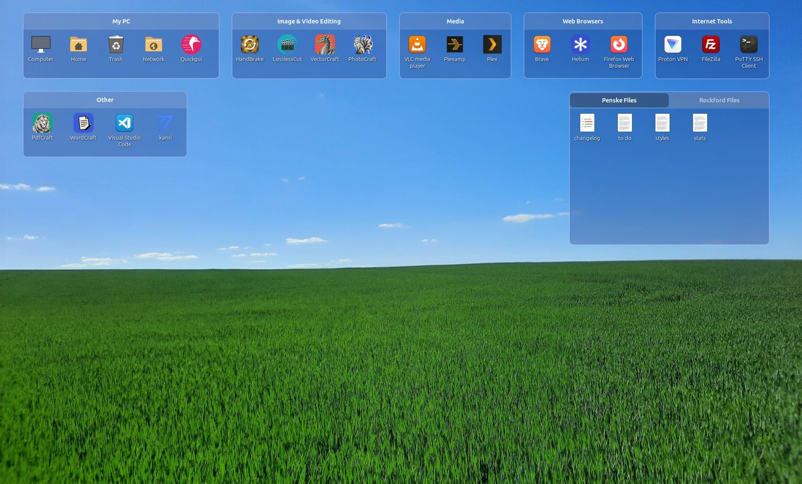

Cubbies
A tidy Linux desktop, one box at a time.
Cubbies puts boxes on your desktop, from see-through to solid, that hold your files, folders and apps. Draw one around your icons and they drop in. Spread cubbies across desktop pages, each with its own wallpaper, show folders live, and let new downloads sort themselves.
Three ideas carry the whole program
Boxes on the desktop, as see-through or as solid as you like. Each holds files, folders and apps with its own name, colour, size and view. Special kinds show a real folder, catch new downloads, list recent files or act as a launch bar.
Separate desktops for work, home, games or projects, each with its own cubbies, wallpaper and default look. Pull the screen edge, swipe, scroll over a title bar or press Ctrl + ← / → to turn the page.
~/Cubbies is where files you put in a cubby are kept, so your Desktop folder stays clean. Shortcuts to apps and system places are only linked, never moved.
The same desktop, sorted into cubbies
Drag the handle. Nemo, Caja or xfdesktop still owns the desktop; Cubbies adds its boxes on top and asks for nothing to be set up first.


BeforeAfterA tour of what a cubby can do
Real screenshots from Linux Mint Cinnamon. Pick a tab.
Pick what a cubby holds
Right-click › Cubby Type switches between the first four.
| Kind | What it holds | How it behaves |
|---|---|---|
| Regular Cubby | Files, folders and app shortcuts you add | Files are kept in the Cubbies folder; shortcuts are linked |
| Folder Cubby | A real folder, shown live (up to 400 items) | Double-click a sub-folder to look inside, ↑ to go back; name clashes ask first; network folders refresh every 3 seconds |
| Inbox Cubby | New files that land on the desktop | Catches everything no other cubby collects |
| Recent Files Cubby | The files you opened lately, newest first | Fills itself; Clear Recent Files from its menu |
| Launch Bar Cubby | Your favourite apps, along a screen edge | No title bar, auto-hide, one click to open |
A desktop for every part of your day
Each page keeps its own cubbies, wallpaper and default cubby look. Drag a cubby to the screen edge and hold it to carry it to the next page. The page keys only work while the desktop is in front, so your other programs keep them.
Organise freely, take it back anytime
Ctrl + Z over a cubby takes back moves, deletes, renames and layout changes, restoring files from the Trash.
Back up now, on every start, daily or weekly, keeping the newest 3 to 200. Restoring never loses a file; anything left over goes back to the Desktop.
Removing Cubbies puts back your wallpaper, the desktop's own icons and your files, on every desktop it has run on.
A conflict window like the file manager's: previews, sizes and dates, then Skip, Keep Both, Replace or Merge.
App shortcuts, system places, drives and anything outside your home folder are only linked. Folder Cubbies show a folder where it is.
The same right-click menu, actions, scripts and clipboard as Nemo, Caja or Thunar, so nothing new to learn.
One command, then draw your first cubby
Download the file for your distribution from the Releases page and run the command in the folder you saved it to. Cubbies starts with an empty desktop and a short Welcome Guide, so nothing is rearranged until you choose.
Start Cubbies from the app menu, or run cubbies. Hold the left button on empty desktop, drag a box and choose Create Cubby Here. To start at login, tick it in Settings › Home.
Linux on X11 with Cinnamon, MATE or Xfce. Python 3, PyGObject with cairo bindings, GTK 3 and libX11; libwnck recommended. Tested on Mint, Debian, Ubuntu, Fedora and EndeavourOS. Wayland is not supported.
Short answers
Does Cubbies move my files?
Only the ones you put in a cubby. By default they go to ~/Cubbies so your Desktop folder stays clean. You can turn that off, or move the Cubbies folder anywhere, in Settings › Sorting & Organising. App shortcuts, system places and drives are only linked.
What happens if I uninstall it?
Everything goes back. Stored files move back to your Desktop, your wallpaper and desktop-icon settings are restored, and the configuration and autostart entry are removed.
Does it replace my desktop or file manager?
No. Nemo, Caja or xfdesktop still draws the desktop and its icons. Cubbies adds its boxes on top and borrows the file manager's own menus, actions, scripts and clipboard.
Does it work on Wayland or other desktops?
It is built for Linux on X11 with Cinnamon, MATE or Xfce. Other X11 desktops would need changes for wallpaper, desktop icons and the file manager. Wayland is not supported.
Is it heavy?
It is one Python program with no background services. It uses short, light polls to notice desktop clicks, edge pulls and the launch bar, and makes thumbnails in the background.
Will my layout survive a monitor change?
Yes. Cubbies on an unplugged screen move onto one that's still there and go back when it returns. Saved layouts let you switch arrangements by name.
How do I report a bug?
Open an issue on GitHub with your Cubbies version (cubbies --version), your distribution and desktop, and if you can, the output of CUBBIES_DEBUG=1 cubbies.